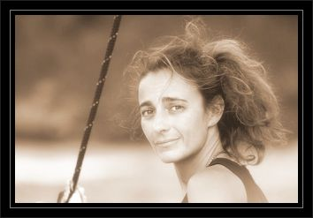
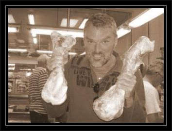
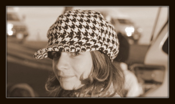
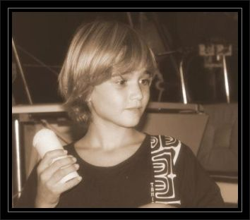
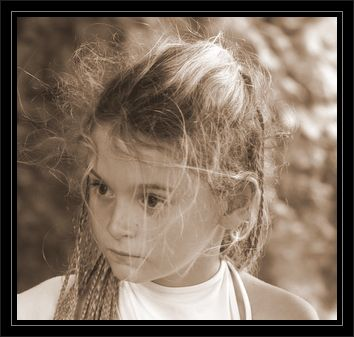

|

|
Cécile - cecile@laruel.be
La capitaine
Cécile a commencé
à naviguer en cabinier en 1990
Cécile est belge, née au Zaïre, il ya quelques années, fille de Roger et Thalie.
Avant de partir, elle travaillait pour une société d'assurance, dans le secteur financier.
A bord, elle s'occupe de tout, principalement de l'école des enfants, de l'intendance et de l'infirmerie. Dotée d'un sens aigu du rangement, elle est capable de retrouver un pot de cornichons en moins de 3 minutes. A titre de comparaison, quand j'essaie, je fous le bordel dans tout le bateau, je jure comme un charretier et je finis piteusement par me passer de cornichons.
Mais n'allez pas croire que son rôle se limite à cela: en bon marin, elle est capable de réaliser seule la plupart des manoeuvres de pont. Chaque fois qu'il le faut, elle est à son poste, que ce soit pour prendre un ris, empanner, jeter l'ancre ou se mettre à quai.
|
|

|
Eric - eric@laruel.be
Le fidèle lieutenant
Eric a commencé la voile en 2004.
Eric est belge, né en 1967, fils de René et Andrée.
Avant de partir, il travaillait comme consultant free-lance.
A bord, il s'occupe de la navigation, des manoeuvres de pont et de la tambouille. Il est aussi responsable de l'entretien du matériel et des bricolages en tous genres.
Il s'occupe également de l'approvisionnement en poisson frais ainsi qu'à la tenue du présent site.
En outre, il prend en charge toutes les formalités d'entrée et de sortie, à son grand désarroi.
|
|

|
Kenya - kenya@laruel.be
Le moussaillon n°1
Kenya est née en 1999
Son imagination est fertile
Kenya est née le 3 avril 1999.
Kenya est en 1ère secondaire-de-l'école-à-distance. Dotée d'une musculature imposante, elle impressionne par sa prestance.
A bord, elle s'occupe de régenter la vie de ses frère et soeur, quand elle n'est pas malade. En effet, c'est elle la plus sensible au mal de mer et comme elle est d'un naturel obstiné, quand elle refuse de prendre sa pillule anti-nauséeux, elle passe de longues heures, couchée, livide, dans sa cabine.
|
|

|
Sidney - sidney@laruel.be
Le moussaillon n°2
Sidney est né en 2001
Il doit son nom aux Jeux Olympiques
Sidney est né le 15 janvier 2001.
Sidney est en 5ème primaire-de-l'école-à-distance. Il est bon en maths mais n'a pas un talent inné pour les langues, en particulier le français.
A bord, il s'occupe de corriger la grammaire française en nous inventant des constructions de phrases variées et toujours très créatives.
C'est aussi le seul des moussaillons qui participe un peu aux manoeuvres de pont. Par exemple, il est capable de mesurer seul le niveau d'eau dans le réservoir.
Dès que l'occasion se présente, il pilote le dinghy et en assure l'amarrage. Il est très fier de réussir un noeud de chaise ou un noeud de capucin, noeuds qu'il a appris en feuilletant 'Le classique des noeuds'.
Depuis qu'il a découvert le logiciel de montage, il n'hésite pas à se servir de la caméra et nous gratifie de courts métrages délirants réalisés avec force effets spéciaux.
|
|

|
Syr Daria - syrdaria@laruel.be
Le moussaillon n°3
Le Syr Daria est l'un des 2 fleuves
qui alimentent la mer d'Aral
Syr Daria est née le 2 septembre 2002.
Syr Daria est en 4ème primaire-de-l'école-à-distance.
A bord, elle s'occupe de dire ce qui est bien et ce qui ne l'est pas. C'est elle qui donne le plus de fil à retordre à Kenya.
Elle adore l'eau et peu rester une journée entière dans la mer. Son pire cauchemar reste toutefois le snorkeling avec les lions des mers. Allez savoir pourquoi !
Chaque fois qu'on va à terre, elle trouve un petit animal à dorloter, chatons, chiots, chevreaux, et même poussins...
Elle interprète aussi les personnages principaux, les seconds rôles et les figurants dans les productions des Sidney's Studios.
|